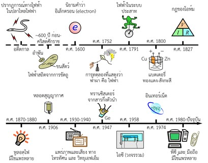
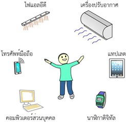
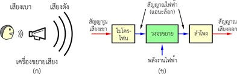
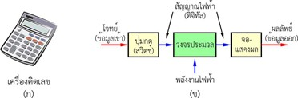
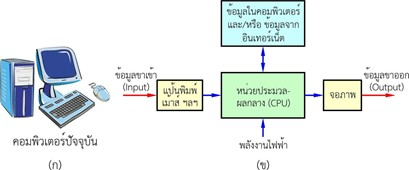
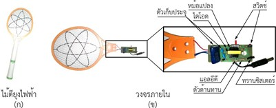

บทที่ 1 อิเล็กทรอนิกส์ในชีวิตประจําวัน
1.1 ประวัติความเป็นมา
อิเล็กทรอนิกส์ (Electronics) เป็นความรู้ หรือ ศาสตร์แขนงหนึ่ง ของศาสตร์
ด้านไฟฟ้า (Electricity) โดย อิเล็กทรอนิกส์ ถูกพัฒนา อย่างต่อเนื่อง และ เป็นไป
อย่างรวดเร็วหลังจากที่มีการ คิดค้นทรานซิสเตอร์ ในปี ค.ศ. 1947 และ ไอซี ในปี
ค.ศ. 1958 (ดูรูปที่ 1-1) ปัจจุบันเชื่อว่า ทุกคน คงรู้จักหรือเคยได้ยินคําว่า
อิเล็กทรอนิกส์ อยู่บ้าง ไม่มากก็น้อย

รูปที่ 1-1 เหตุการณ์สําคัญที่เกี่ยวกับ การพัฒนาอิเล็กทรอนิกส์
1.2 ความสําคัญของอิเล็กทรอนิกส์
หากเราสังเกตรอบ ๆ ตัวเรา เราจะพบว่า เครื่องใช้ในชีวิตประจําวัน ส่วนหนึ่ง จะเป็น เครื่องใช้ไฟฟ้า/อิเล็กทรอนิกส์ โดยเครื่องใช้เหล่านี้ มีแนวโน้มที่จะเพิ่มมากขึ้น และ มีความสําคัญต่อการดําเนินชีวิตมากขึ้นทุกวัน (ดูรูปที่ 1-2) ปัจจุบันมีคนจํานวนมากในโลกบอกว่า ตนเองไม่สามารถดําเนินชีวิตอยู่ได้ หากปราศจากเครื่องใช้ไฟฟ้า/อิเล็กทรอนิกส์ โดยเครื่องใช้อิเล็กทรอนิกส์ที่สําคัญมากชนิดหนึ่ง คือ คอมพิวเตอร์ส่วนบุคคล หรือ พีซี (Personal Computer : PC)
สําหรับคนในยุคปัจจุบัน การมีความรู้ทางด้านอิเล็กทรอนิกส์ เป็นเรื่องที่จําเป็นอย่างมาก เพราะ จะทําให้ (1) สามารถทําความเข้าใจเรื่องพื้นฐานในการดําเนินชีวิตได้อย่างถูกต้อง (2) สามารถซ่อมแซมหรือแก้ไขเครื่องใช้ไฟฟ้า/อิเล็กทรอนิกส์ เมื่อถึงคราวจําเป็น และ (3) อาจทําให้เราสามารถออกแบบหรือสร้าง นวัตกรรม โดยการใช้ระบบอิเล็กทรอนิกส์ในการควบคุมการทํางาน

รูปที่ 1-2 เครื่องใช้ไฟฟ้า/อิเล็กทรอนิกส์รอบ ๆ ตัว
1.3 แอนะล็อก ดิจิทัล และ คอมพิวเตอร์
หากเราจําแนก เครื่องใช้อิเล็กทรอนิกส์ ที่มีอยู่ในปัจจุบัน เราแบ่งได้เป็น 2 ประเภท คือ เครื่องใช้ระบบแอนะล็อก (Analog Devices) และ เครื่องใช้ระบบดิจิทัล (Digital Devices) สําหรับคอมพิวเตอร์ส่วนบุคคลที่มีใช้แพร่หลายอยู่ ถือเป็น เครื่องใช้อิเล็กทรอนิกส์ระบบดิจิทัล ชนิดหนึ่ง
ระบบแอนะล็อก คือ ระบบที่ใช้สัญญาณแอนะล็อกในการทํางาน สัญญาณ แอนะล็อก คือ สัญญาณที่มีความต่อเนื่องในเชิงขนาดตามเวลา
ตัวอย่างระบบแอนะล็อกที่มีใช้แพร่หลาย คือ เครื่องขยายเสียง (ดูรูปที่ 1-3) โดยทั่วไป การทํางานของเครื่องขยายเสียงจะเริ่มจาก การรับสัญญาณเสียงเข้า ผ่านไมโครโฟน ซึ่งเป็นอุปกรณ์ที่แปลงสัญญาณเสียง เป็นสัญญาณไฟฟ้าแบบแอนะล็อก จากนั้นสัญญาณไฟฟ้าจึงถูกขยายด้วยวงจรขยาย แล้ว สัญญาณไฟฟ้าขาออก จึงถูกแปลงกลับเป็นสัญญาณเสียงที่ดังขึ้น ผ่านลําโพง
นอกจากเครื่องขยายเสียงแล้ว เครื่องใช้อิเล็กทรอนิกส์ในระบบแอนะล็อกยังมีอีกมากมาย เช่น วิทยุ โทรทัศน์ เครื่องเล่นวีดีโอ ฯลฯ

รูปที่ 1-3 (ก) เครื่องขยายเสียง และ (ข) แผนภาพระบบภายใน
ที่ประกอบด้วย ไมโครโฟน วงจรขยาย และ ลําโพง
ระบบดิจิทัล คือ ระบบที่ใช้สัญญาณดิจิทัลในการทํางาน โดยสัญญาณดิจิทัลนี้จะมีขนาด (หรือ ค่า) ไม่ต่อเนื่อง ซึ่งโดยทั่วไป สัญญาณดิจิทัลจะแบ่งเป็นสองระดับ ซึ่งเรียกว่า “0” และ “1” การประมวลสัญญาณดิจิทัล คือ การดําเนินการกับตัวเลข “0” และ “1” นั่นเอง
ตัวอย่างระบบดิจิทัล ตัวอย่างหนึ่ง คือ เครื่องคิดเลข (ดูรูปที่ 1-4) โดยระบบภายในของเครื่องคิดเลข จะประกอบด้วย (1) ส่วนรับข้อมูลเข้า ด้วยปุ่มกด หรือ สวิตช์ต่าง ๆ (2) วงจรประมวล ที่รับสัญญาณไฟฟ้าแบบดิจิทัลเข้ามาประมวล และ (3) จอแสดงผลที่แสดงผลลัพธ์จากการคํานวณ เป็นข้อมูลขาออก
โดยระบบทางอิเล็กทรอนิกส์ใด ๆ ทั้งระบบแอนะล็อก และ ระบบดิจิทัล จะทํางานได้เมื่อมีการป้อนพลังงานไฟฟ้าให้กับวงจรที่เป็นหัวใจของระบบ
สําหรับ คอมพิวเตอร์ที่ใช้งานอยู่ในปัจจุบัน รวมถึง คอมพิวเตอร์ในแทปเลต และ โทรศัพท์มือถือ เราถือว่ามันเป็นระบบดิจิทัลระบบหนึ่ง ทุกวันนี้ ระบบเหล่านี้ถูกพัฒนาไปอย่างรวดเร็ว และ ถูกทําให้สามารถตอบสนองความต้องการของผู้ใช้ได้หลากหลายมากขึ้น โดยทั่วไป คอมพิวเตอร์ จะประกอบด้วย (1) ส่วนรับข้อมูลขาเข้า (Input Unit) (2) หน่วยประมวลผล หรือ ซีพียู (Central Processing Unit: CPU)

รูปที่ 1-4 (ก) เครื่องคิดเลข และ (ข) แผนภาพระบบภายใน
ประกอบด้วย ปุ่มกด วงจรประมวล และ จอแสดงผล

รูปที่ 1-5 (ก) คอมพิวเตอร์ปัจจุบัน และ (ข) แผนภาพระบบภายใน
ที่ประกอบด้วย อุปกรณ์รับข้อมูล (แป้นพิมพ์ เม้าส์ และ อื่น ๆ) หน่วยประมวลผลกลาง (Central Processing Unit : CPU) ฐานข้อมูล และ หน่วยแสดงผล (จอภาพ)
(3) หน่วยความจํา (Memory) ที่ใช้เก็บข้อมูลที่ใช้ประกอบการประมวลผล และ
(4) หน่วยแสดงผล ได้แก่ จอภาพ เครื่องพิมพ์ และ อุปกรณ์ต่อพ่วงอื่น ๆ
1.4 การเริ่มต้นศึกษาอิเล็กทรอนิกส์
หากเราเริ่มต้นศึกษาด้านอิเล็กทรอนิกส์ จากการศึกษาภายในเครื่องใช้อิเล็กทรอนิกส์สมัยใหม่ (เช่น แกะโทรศัพท์มือถือออกมาดู) เราอาจรู้สึกว่า เราไม่สามารถทําความเข้าใจได้เลย เนื่องจากวงจรเกือบทั้งหมดถูกบรรจุอยู่ในไอซี ที่มีการทํางานที่มีความซับซ้อนมาก และ ปิดผนึกไว้เป็นอย่างดี อย่างไรก็ตาม หากเราเริ่มศึกษาด้านอิเล็กทรอนิกส์ จากการพิจารณาเครื่องใช้ที่มีหลักการง่าย ๆ เราก็จะสามารถเข้าใจการทํางานของอุปกรณ์ภายในเครื่องใช้นั้น ๆ ได้ อย่างไม่ยากนัก ยิ่งไปกว่านั้น ในปัจจุบัน เราสามารถใช้อินเทอร์เน็ต ในการสืบค้นข้อมูลที่เราสนใจได้อย่างง่ายดาย ดังนั้น การศึกษาด้านอิเล็กทรอนิกส์ในปัจจุบัน จึงไม่เป็นเรื่องยากเกินไป
เครื่องใช้อิเล็กทรอนิกส์ที่จะขอนําเสนอวงจรภายในให้ดูเป็นตัวอย่าง คือ ไม้ตียุงไฟฟ้า (Electric Flywatters หรือ Mosquito Bats) เครื่องใช้นี้เริ่มมีการใช้งานกันอย่างแพร่หลายเมื่อไม่นานนี้ (ประมาณปี ค.ศ. 2005) รูปที่ 1-6 แสดงตัวอย่างไม้ตียุง และ รูปภาพวงจรภายใน จากรูปจะเห็นได้ว่า วงจรนี้ ประกอบด้วย อุปกรณ์อิเล็กทรอนิกส์เพียงไม่กี่ตัว ซึ่งได้แก่ ตัวต้านทาน ตัวเก็บประจุ สวิตช์ ไดโอด แอลอีดี ทรานซิสเตอร์ และ หม้อแปลง หากเราสามารถทําความเข้าใจการทํางานของอุปกรณ์เหล่านี้ (ซึ่งเป็นเนื้อหาในบทที่ 2) และ เข้าใจลักษณะการเชื่อมต่อกัน เป็น วงจร (Circuit) เราก็จะสามารถเข้าใจการทํางานของไม้ตียุงไฟฟ้านี้ได้ โดยเมื่อเราเข้าใจวงจรแล้ว เมื่อเกิดปัญหากับการใช้เครื่องใช้นี้ เราเองก็อาจจะสามารถซ่อมแซมได้ด้วยตัวเอง และ อาจจะสามารถพัฒนาต่อยอด ให้กลายเป็นเครื่องใช้ชนิดใหม่ ๆ จากความรู้ที่มีได้อีกด้วย

รูปที่ 1-6 (ก) ไม้ตียุงไฟฟ้า และ (ข) ภาพวงจรภายใน
ที่ประกอบด้วยอุปกรณ์อิเล็กทรอนิกส์ต่าง ๆ

NEXT